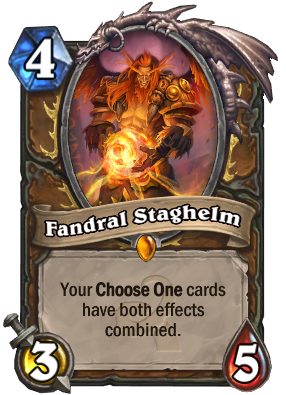

Card of the Week
Week of April 2-8 2017
For the first card of the week we are looking at Fanderal Steghelm. This card has shaped the many metas and has been the corner stone of many decks. Fandaral came into the game with the Whispers of the Old Gods set with the old druid mainstay of Force of Nature being nerfed. This card alone was able to keep druid as a combo class. What makes this card amazing is the combination of a 3/5 body on turn 4, and how its abbilty allows for combos that would have been previously unheard of.